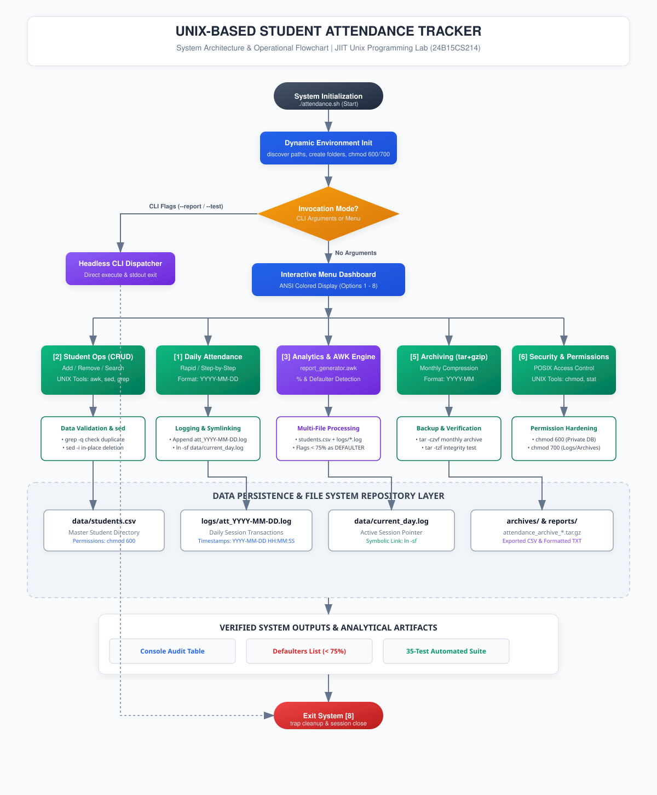

Department of CSE & IT | Jaypee Institute of Information Technology, Noida-62 (24B15CS214)

flowchart TD
Start(["System Startup
./attendance.sh"]) --> Init["Dynamic Path Discovery &
Folder Init (common.sh)"]
Init --> ModeChoice{"Invocation
Mode?"}
ModeChoice -- "CLI Flags (--report / --test)" --> CLIDispatch["Headless CLI Dispatcher
Direct stdout execution"]
ModeChoice -- "No Flags" --> MainMenu["Interactive Menu Dashboard
(ANSI 98-char Interface)"]
MainMenu --> Opt1["[1] Mark Daily Attendance
mark_attendance.sh"]
MainMenu --> Opt2["[2] Student Management (CRUD)
student_ops.sh"]
MainMenu --> Opt3["[3] Analytics & Reports
report_generator.awk"]
MainMenu --> Opt4["[4] Inspect Active Session
via Symlink"]
MainMenu --> Opt5["[5] Monthly Archiving
archive.sh (tar + gzip)"]
MainMenu --> Opt6["[6] Security & Permissions
security.sh (chmod)"]
MainMenu --> Opt7["[7] Automated 35-Test Suite
tests/run_tests.sh"]
MainMenu --> Opt8["[8] Exit System
(trap cleanup)"]
%% Operational Logic
Opt1 --> MarkLogic["Prompt Date YYYY-MM-DD
Choose Rapid vs Step Mode"]
MarkLogic --> LogWrite["Append to Daily Log:
logs/att_YYYY-MM-DD.log"]
LogWrite --> Symlink["Update Active Soft Link:
ln -sf data/current_day.log"]
Opt2 --> StudentLogic["Validate Roll Number
grep -q duplicate prevention"]
StudentLogic --> StudentPersist["Update Master DB:
data/students.csv (sort & sed -i)"]
Opt3 --> AwkEngine["Pass students.csv + logs/*.log
to report_generator.awk"]
AwkEngine --> CalcEngine["Compute % = (Attended / Held)*100
Flag < 75% as DEFAULTER"]
CalcEngine --> Export["Export Reports:
• reports/*.txt (Formatted)
• reports/*.csv (Analytical)"]
Opt4 --> SymlinkRead["Resolve Soft Link via readlink -f
Display Today's Turnout Table"]
Opt5 --> TarCompress["Compress monthly logs:
tar -czvf attendance_archive_YYYY-MM.tar.gz"]
TarCompress --> TarVerify["Verify integrity: tar -tzf"]
Opt6 --> PermPolicy["Enforce POSIX DAC:
• chmod 600 (students.csv, logs)
• chmod 700 (directories)
• chmod 755 (scripts)"]
Opt7 --> TestHarness["Execute 35 Regression Tests
Assert CRUD, AWK, Tar, Symlink"]
%% Output & Convergence
Symlink --> Persistence[("Data Persistence Layer
data/ | logs/ | archives/")]
StudentPersist --> Persistence
Export --> Persistence
TarVerify --> Persistence
PermPolicy --> Persistence
Persistence --> Results["Formatted Outputs, Defaulter Alerts & Verified Integrity"]
Results --> Opt8
CLIDispatch --> Opt8
Opt8 --> EndNode(["System Terminated Safely"])
classDef primary fill:#2563EB,stroke:#1D4ED8,stroke-width:2px,color:#FFFFFF;
classDef success fill:#059669,stroke:#047857,stroke-width:2px,color:#FFFFFF;
classDef warning fill:#D97706,stroke:#B45309,stroke-width:2px,color:#FFFFFF;
classDef purple fill:#7C3AED,stroke:#6D28D9,stroke-width:2px,color:#FFFFFF;
classDef danger fill:#DC2626,stroke:#B91C1C,stroke-width:2px,color:#FFFFFF;
class Start,MainMenu primary;
class Opt1,Opt2,Opt4,Opt5,Opt6,MarkLogic,StudentLogic,TarCompress,PermPolicy success;
class ModeChoice warning;
class Opt3,CLIDispatch,AwkEngine,CalcEngine,Export purple;
class Opt8,EndNode danger;